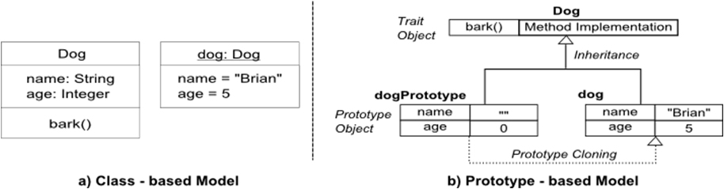
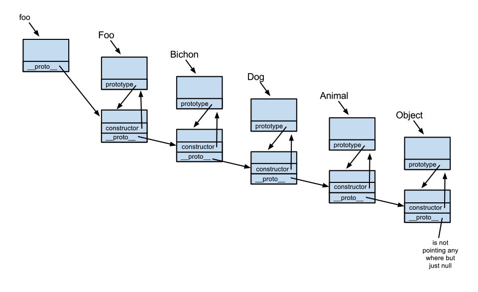
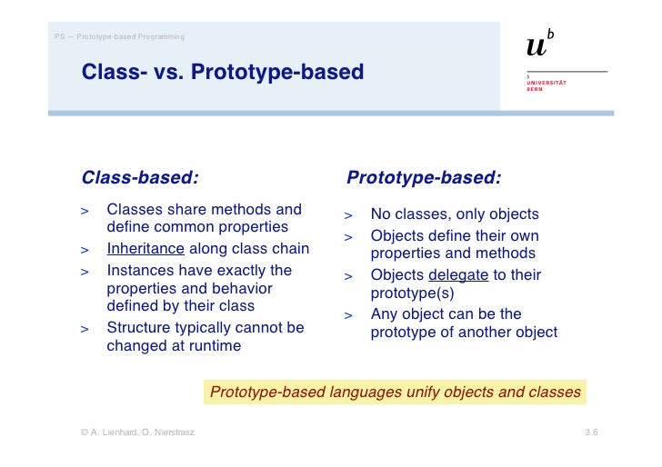

JavaScript
Object-Oriented Programming
Presented by Patricia Cifra
Welcome!
Girl Develop It is here to provide affordable and accessible programs to learn software through mentorship and hands-on instruction.
Some "Rules"
- We are here for you!
- Every question is important
- Help each other
- Be Respectful
- Have fun!
Introductions
- Who are you?
- What spurred you into learning about development?
- What do you hope to get out of the class?
Object-oriented programming

- Objects have properties and methods
- There can be many "instances" of objects
Object-oriented programming

- Objects can inherit properties/methods of other objects
- Objects can implement parent methods in different ways

Prototype-based programming
A style of object-oriented programming in which behaviour reuse (known as inheritance) is performed via a process of cloning existing objects that serve as prototypes.Prototype-based programming
The Object
Simple way to create new object
var cat = {};
cat.speak = function(line) {
console.log("the cat says " + line);
}
cat.speak("give me treats");
this
function speak(line) {
console.log("the "+ this.adjective + " cat says " + line);
}
var blueCat = {adjective: "blue", speak: speak};
var blackCat = {adjective: "black", speak: speak};
blueCat.speak("why am I blue? this is weird");
blackCat.speak("i love Halloween");
Using apply() and call()
speak.apply(blueCat,["boom"]);
speak.call(blueCat,"pow");
Try it yourself
- Create a method
- Create two objects that use the method that share a property with different values
- Use call() to invoke the method on the two objects.
New keyword
function Cat(adj) {
this.adjective = adj;
this.speak = function(line) {
console.log("The " + this.adjective + " cat says " + line);
}
}
var zombieCat = new Cat("zombie");
zombieCat.speak("mmmM brains..");
Why use new?
function createCat(adjective) {
return {
adjective: adjective,
speak: function(line) {
console.log("the " + this.adjective + " cat says " + line);
}
}
}
var hipsterCat = createCat("hipster");
Check out those constructors
console.log(zombieCat.constructor);
console.log(hipsterCat.constructor);
Constructor Property
var someObject = {};
console.log(someObject);
console.log(someObject.toString);
console.log(Cat.prototype);
console.log(Cat.prototype.constructor);
console.log(zombieCat.toString == someObject.toString);
Prototypes
Inheritance and the prototype chain
Class vs. Prototype
Sharing is one way
Cat.prototype.fur = "soft";
console.log(zombieCat.fur);
zombieCat.fur = "bloody";
console.log(zombieCat.fur);
console.log(Cat.prototype.fur);
Adding new properties/methods
Cat.prototype.eat = function() {
console.log("The " + this.adjective + " cat is eating");
}
zombieCat.eat();
Putting it all together: Defining Objects in JavaScript
// The constructor function
function Book(title, author, numPages){
// The properties of this object
this.title = title;
this.author = author;
this.numPages = numPages;
this.currentPage = 0;
}
// A method on the object
Book.prototype.read = function(){
this.currentPage = this.numPages;
console.log("You read " + this.numPages + " pages!");
}
// Instantiating a new object
var book = new Book("Robot Dreams", "Isaac Asimov", 320);
book.read();
Exercise Time!
Extending Objects in JavaScript
// The constructor function
function PaperBack(title, author, numPages, cover){
Book.call(this, title, author, numPages);
this.cover = cover;
}
// Extending the Book object
PaperBack.prototype = Object.create(Book.prototype);
// A new method on this object
PaperBack.prototype.burn = function () {
console.log("Omg, you burnt all " + this.numPages + "pages");
this.numPages = 0;
}
// Instantiating a new object
var paperback = new PaperBack("1984", "George Orwell", 250, "cover.jpg");
paperback.read();
paperback.burn();
Exercise Time!
Clearer Constructor
function Book(title, author, numPages) {
this.title = title;
this.author = author;
this.numPages = numPages;
this.currentPage = 0;
}
var book = new Book("Robot Dreams", "Isaac Asimov", 320);
versus:
function Book(config) {
this.title = config.title;
this.author = config.author;
this.numPages = config.numPages;
this.currentPage = 0;
}
var book = new Book({
title: "Robot Dreams",
author: "Isaac Asimov",
numPages: 320});
Optional Arguments
function Book(config) {
this.title = config.title;
this.author = config.author;
this.numPages = config.numPages;
this.currentPage = 0;
}
var book = new Book({
title: "Robot Dreams",
author: "Isaac Asimov",
numPages: 320
});
versus:
function Book(config){
config = config || {};
this.title = config.title || "Untitled";
this.author = config.author || "Unknown";
this.numPages = config.numPages || 100;
this.currentPage = 0;
}
var book = new Book({
title: "Robot Dreams",
numPages: 320
});
Exercise Time!
Private members in JavaScript
function Cat(adj) {
this.adjective = adj;
var kittySecret = "..";
this.hearSecret = function(secret){
kittySecret = secret;
}
this.tellSecret = function() {
return kittySecret;
}
}
console.log(zombieCat.tellSecret());
zombieCat.hearSecret("ashley eats baby kittens");
console.log(zombieCat.tellSecret());
console.log(zombieCat.kittySecret);
Inheritance

Person
// Define the Person constructor
var Person = function(name) {
this.name = name;
};
// Add a couple of methods to Person.prototype
Person.prototype.speak = function(){
console.log("My name is " + this.name);
};
Person.prototype.walk = function(){
console.log(this.name + " is walking");
};
Student
// Define the Student constructor
function Student(name, major) {
// Call the parent constructor, making sure (using Function#call)
// that "this" is set correctly during the call
Person.call(this, name);
// Initialize our student-specific properties
this.major = major;
};
Student.prototype = Object.create(Person.prototype); // See note below
// Set the "constructor" property to refer to Student
Student.prototype.constructor = Student;
// Replace the "sayHello" method
Student.prototype.sayHello = function(){
console.log("Hello, I'm " + this.firstName + ". I'm majoring in "
+ this.major + ".");
};
Test it out
// Example usage:
var student1 = new Student("Janet", "Applied Physics");
student1.sayHello(); // "Hello, I'm Janet. I'm majoring in Applied Physics."
student1.walk(); // "I am walking!"
student1.sayGoodBye(); // "Goodbye!"
// Check that instanceof works correctly
console.log(student1 instanceof Person); // true
console.log(student1 instanceof Student); // true
Object.create()
function createObject(proto) {
function ctor() { }
ctor.prototype = proto;
return new ctor();
}